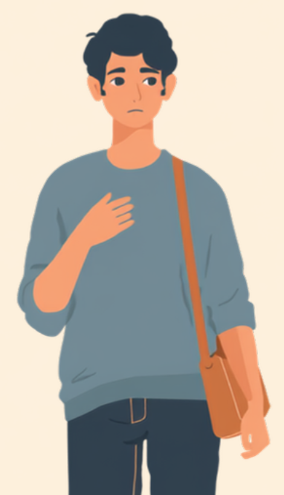
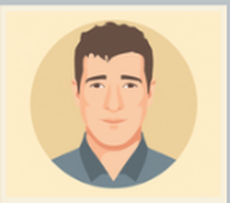

心臓機能障害は、外見からは判断しにくい内部障害のひとつです。杖も車椅子も使っていないと、「そんなに大変そうに見えない」と受け取られやすく、階段や早歩きのあとの動悸や息切れ、だるさを、本人がどう伝えても「気にしすぎ」「大袈裟」と思われてしまう場面があります。この記事では、心臓機能障害のある方が仕事の中で抱えやすい「見た目とのギャップ」のしんどさと、職場への伝え方、使える制度を当事者の声をもとに整理しました（2026年7月時点の情報です）。
PR



階段を上りきったところで、少しの間だけ動けなくなる
「元気そうだね」の裏側にある、伝わりにくいしんどさ
心臓機能障害は、血液を送り出す機能そのものが低下している状態です。見た目には表れにくいですが、一般的な体力を前提にした動きが、想像以上の負担になっていることがあります。ミミ
就労支援の現場で関わってきた中で、内部障害のある方から繰り返し聞いてきた言葉があります。「元気そうに見えるでしょ、ってよく言われるんです」というものです。心臓機能障害は身体障害者手帳の対象になり得る障害ですが、杖や装具のような「見てわかるサイン」がないぶん、周囲は本人の体調を推し量る手がかりを持ちにくいのだと思います。
本人にとっては、朝の身支度だけで息が上がったり、駅の階段をのぼったあとしばらく動けなかったりする日があっても、職場に着いた頃には表情も普段どおりに整えていることが多いようです。結果として、「普通に仕事してるし、大丈夫なんだろう」という周囲の印象と、本人が抱えている疲労感との間に、目に見えないずれが生まれやすくなります。
!
心臓機能障害の症状の現れ方や程度には個人差があります。この記事で挙げる内容がそのまま当てはまるとは限らないため、体調に不安がある場合は自己判断せず主治医に相談することをお勧めします。
「入社したとき、面接では『体力的にきつい業務は難しい』と伝えていたはずなんですが、半年もすると忘れられていたみたいで、急な出張の荷物運びを頼まれたことがありました。断ったら『そんなに大変そうに見えないのに』って言われて、なんて説明すればいいのか分からなくなって、結局その場では『大丈夫です』って言ってしまいました。あとで動悸がひどくて、休憩室でしばらく座り込んでいました。」
40代・男性（心臓機能障害・総務職）
相談の一コマ

相談者
階段をのぼったあと、しばらく動けなくなることがあるんです。でも周りには「そんなに大変そうに見えない」って言われて、どう説明すればいいのか分からなくて。

ミミ
心臓機能障害は、見た目にはほとんど表れない内部障害の代表例なんです。杖や装具のようなサインがないぶん、周りが気づきにくいのは当然のことなんですよ。
相談者
当然、なんですか…私が説明下手なだけかと思っていました。
ミミ
症状の全部を説明しようとしなくて大丈夫です。「階段よりエレベーターを使いたい」など、具体的な場面だけ伝える方法、次の章で一緒に見ていきましょう。
同じ「階段3階分」でも、体への負担は人によって違う
心臓機能障害があると、健康な人であれば何でもない動作が、心臓にとっては大きな負荷になることがあります。厄介なのは、その負荷が外からはほとんど見えないという点です。階段をのぼる、少し早歩きする、重い荷物を持つ。傍目には「みんなと同じ動き」に見えても、体の内側で起きている負担の大きさはまったく違うことがあります。
i
動悸や息切れの感じ方には個人差があり、同じ心臓機能障害という診断名でも、実際にどこまでの動作が負担になるかは人によって異なるとされています。心配な症状があるときは、我慢せず主治医に相談してください。
この「見た目と負担のギャップ」を職場の人が知らないままだと、悪気なく「このくらい平気でしょ」という前提で仕事を振られてしまうことがあります。本人も、毎回すべてを説明するのは疲れるので、つい黙って引き受けてしまい、あとで体調を崩す、という悪循環に陥りやすいようです。
「正直言うと、しんどいときに『しんどい』って言うのがめちゃくちゃ苦手でした。周りは元気に働いてるのに自分だけ弱音を吐いてるみたいで恥ずかしくて。でも3ヶ月くらい我慢し続けたら、ある日会議中に急に動悸がひどくなって、立てなくなったんです。その後は流石に上司も『先に言ってくれ』って言ってくれるようになったんですけど、あそこまでいかないと伝わらないのかって、ちょっと悲しくなりました。」
30代・女性（心臓機能障害・営業事務）
職場にどう伝える、「無理しないで」と言われすぎる問題との付き合い方
厄介なのは、伝え方によっては今度は逆に、必要以上に心配されすぎるという問題も起きることです。ちょっと動いただけで「大丈夫?無理しないで」と何度も声をかけられ続けると、それはそれで疲れてしまう、という声もあります。「大丈夫かどうか分からない扱い」と「大袈裟に心配される扱い」の間で、ちょうどいい伝え方を見つけるのは簡単ではありません。
具体的な場面に絞って伝えるという考え方
症状のすべてを説明しようとすると、かえって伝わりにくくなることがあります。業務に関わる具体的な場面だけに絞って伝える方法が、双方にとって負担が少ないとされています。
- 「階段より遠回りでもエレベーターを使いたいです」
- 「急ぎの早歩きが必要な依頼は、少し時間をもらえると助かります」
- 「動悸がしたときは、席に座らせてもらえれば数分で落ち着きます」
- 「声をかけてほしいのは顔色が明らかに悪いときで、普段は気にしなくて大丈夫です」
「どこまで大丈夫で、どこからが心配してほしいライン」を先に共有しておくと、周りの人も気を遣いすぎずに済むという声をよく聞きます。伝えることは甘えではなく、お互いが働きやすくなるための準備だと思ってみてください。ミミ
病名や検査結果の詳細まで伝える義務はありません。信頼できる上司や人事担当者に、業務に関わる範囲でまず共有し、そこからチーム内に必要な情報だけ広げてもらう、という進め方をとっている方もいるようです。
使える制度と、一人で抱えないための相談先
身体障害者手帳という選択肢
心臓機能障害は、身体障害者手帳の内部障害の区分に含まれる場合があります。等級は心臓の機能低下の程度や日常生活への影響によって異なるため、詳しくは主治医や自治体の障害福祉窓口に確認するのが確実です（2026年7月時点の情報です）。手帳を取得すると、障害者雇用枠での就職や、企業側の合理的配慮を前提にした働き方を選びやすくなる場合があります。
相談できる窓口
- 主治医・循環器内科（症状の記録や、働き方についての意見書の相談）
- 職場に選任されている産業医（50人以上の事業場に選任義務あり）
- 自治体の障害福祉窓口、身体障害者手帳の相談窓口
- 就労移行支援事業所（体調管理を含めた就労準備や職場との調整）
心臓機能障害の症状の現れ方や、必要な配慮の内容には個人差があります。この記事の内容がそのまま当てはまるとは限らないため、実際の判断は主治医・支援者・自治体の窓口とよく相談しながら進めることをお勧めします（2026年7月時点の情報です）。
見た目で判断されやすいからこそ、しんどさを言葉にすることには勇気がいります。それでも、具体的な場面に絞って伝えることは、決して大袈裟なことではありません。
よくある質問
Q. 心臓機能障害でも障害者手帳は取れますか？
心臓機能障害は身体障害者手帳の内部障害の区分に含まれる場合があります。等級は心臓の機能低下の程度や日常生活への影響によって異なるため、詳しくは主治医や自治体の障害福祉窓口にご確認ください（2026年7月時点の情報です）。
Q. 「疲れやすい」をどう職場に伝えればいいですか？
症状の詳細まですべて説明する必要はないとされています。「階段より遠回りでもエレベーターを使いたい」「急な早歩きの依頼は難しいことがある」など、業務に関わる具体的な場面に絞って伝える方法が助けになる場合があります。
Q. 心臓機能障害があると、どんな仕事が向いていますか？
一概には言えませんが、身体的な負荷が少なく、休憩や通院の融通が利きやすい事務系の仕事は選択肢の一つとされています。ただし向き不向きは症状の程度や本人の希望によって異なるため、就労移行支援機関などに相談しながら探すことをお勧めします。
Q. 通院と仕事の両立は可能ですか？
通院頻度や治療内容によって必要な配慮は異なりますが、通院日をあらかじめ共有し、業務量を調整してもらいながら両立している方もいます。産業医や人事担当者に早めに相談しておくと、急な体調変化があったときにも対応しやすくなる場合があります。
Q. 「無理しないで」と言われすぎるのがつらいときは？
心配してもらえること自体はありがたい一方、必要以上に気を遣われると疲れてしまうこともあるとされています。「今は大丈夫」「こういうときに声をかけてほしい」といった具体的な基準を伝えておくと、お互いの負担が減る場合があります。
この5点を頭に置いておくだけで、少し気持ちが軽くなるかもしれません
PR


一人で抱え込む前に、今の気持ちを話してみませんか
「まだ迷っている」段階でも大丈夫です。mimemimeの無料相談は、今の状況の整理から一緒に始められます。
無料で話してみる
おのざる
mimemime代表。就労支援の現場経験をもとに、障がいのある方の働く不安に寄り添う記事を執筆。